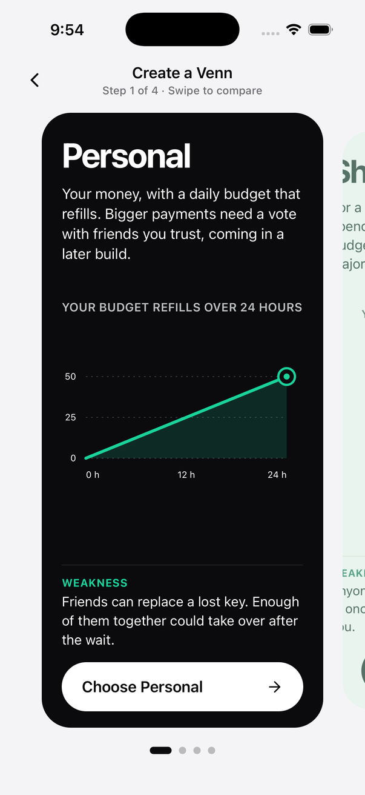

Enter a whole number from 1 to 1,000,000 satoshis. A satoshi is the smallest unit of BCH.
Fits the budget30,000 sat would remain.
Each example starts with a fresh allowance. This is a simulation.
A shared fund, step by step
Everyone gets to read the rules.
Pick rules together
Start with Shared for individual budgets, or Pot when every payment needs a vote. A Shared member can spend their available budget at once. Pot payments can wait when voters are away.
Accept a seat
Review the plan and sign your seat with your own key. Once every member has accepted, the creator can fund the Venn.
Pay within your allowance
Review the recipient, amount, and fee. A CashScript contract checks the payment and the updated allowance stored in a member CashToken.

Venn for iOS · Preset picker
Source alpha
Try Venn on your platform.
Android
Install the standalone preview to try planning, seat acceptance, and shared spending on Chipnet.
Use a development build for the same Chipnet Venn flow, with keys stored on the device.
npm run ios
Web
Pair a compatible wallet via WizardConnect for ordinary Mainnet BCH payments. Use the native alpha to try shared Venns on Chipnet.
npm run web
Run these commands from the source checkout after npm ci. Native builds also require npm run setup:native and local platform tooling. To check the signed payments yourself, run npm run demo:blaze. Venn source and setup · Demo transcript